Note: Due to various hardware crashes and the lack of money to do
anything
about it I no longer run Windows or DOS (just Linux) so this page is
way
out of date. Hopefully I'll get some stuff up and running so I can get
back into things.
03/2005: Oops! Had the
correct email address listed but forgot to change the
mailto: URL.
12/2007: Wayfarer
2.2 now available from this page. Old ftp demon site/link
is no good. I found this one from
ftp://ftp.volftp.tiscali.it/.snapshot/nightly.1/pub1/pc/windows-3xx/shell/
After finding myself in possession of a number of old software goodies
I decided to jump back into the DOS/Win3 world. Working at an outdoor
marketplace
(aka swap meet) I'm amazed at what people just dump as trash like tons
of
vinyl records and such. One day I came across a Unisys-branded box with
all
of the disks for MS-DOS 6.22 and Windows for Workgroups. Soon after I
find
a full in-the-box Novell WordPerfect 6 complete with manual. Quickly
followed
by Corel WordPerfect Suite for Win3 on CD (original, sealed). Followed
closely
by the next version for Win3/Win95.
After failing to get any Linux or BSD OS to work properly with an old
Dell Inspiron 3000 laptop I decided I'll use it for DOS.
BTW, Windows XP Pro actually ran surprisingly well on it considering it
only has about 180MB or so of RAM.
A lot of work and experimenting with other DOSes (Datalight's ROM-DOS
networking stack and
Paragon's PTS-DOS 2000 among them) all was good and pretty cool until I
wound up moving again. Cramped quarters at the moment is keeping me
from playing with it all again.
Also time for me to move these comments away from the Makeover page.
Soon, maybe.
08/2009: Yahoo Geocities is
closing so I moved this to FatCow webhosting. Now
it's time to dust off that old Dell and have some more fun.
The Internet Archive's Wayback Machine will hopefully be archiving this
page as well as many other Geocities pages. Though I've moved this page
to another host (click on the title of
the page to get to the new site) and it will be updated I'm glad
that IA is doing this. If I can't
continue to pay for hosting in the future at least the information will
still be accessible.
The companion site to this one, Cryptic Crab's DOS/Win3, has been archived in two places. Geocities.ws and Wayback Machine.
Oh, one last thing. Just realized that I had my old hardware list on
this
site detailing what I was using at the time this site went up.
That was back in 1998!
32MB of RAM was more than enough for Linux. :-)
My then-current hardware list
Way back when, a company known as Playroom Software offered
a utility called OSFrame. I think I first discovered it as a
shareware/demo
that was found in one of the online service's file archives. Compuserve
(RIP 2009) comes to mind for some reason. I was hooked and immediately
registered it. Sometime later the name was changed to Makeover.
The package included a number of utilities but the main two were
ButtonMaker and OSFrame.
ButtonMaker handled the buttons (minimize, maximize, document, and
scroll bar arrows). It comes with predefined buttons ready to use for
Macintosh, NeXT, Motif, and 3D Windows. Other buttons are included for
importing that cover OS/2, Mac System 7, and variations on the others.
OSFrame is the main utility. This is what allows full control over
borders (from none to really really fat silly borders), title bars,
title bar text, background, buttons, menu bar, menu text, shadows, etc.
It comes with a number of schemes including variations on the standard
Control Panel color schemes. It even suggests a minimum border
thickness
based on the color scheme you choose.
The status of Playroom Software is unknown. I conducted a search on the
'net but just couldn't find anything current. Found one Compuserve
address but received no response when I mailed to it.
New Note: Makeover is here and available for download. Just click
here and
have at it. I included installation instructions in the zip file so
everything should
go smoothly.
Below are some thumbnails of various schemes/themes featuring various
shells and utilities to try and complete a look.
The full screen shots are 1024x768.
Click on the JPG filename for the full size pics.
I plan to add more detailed descriptions of some of the earlier
screenshots and whatnot.
Note: The AOL Browser will not show the screenshots in their
full glory if you have "Use Compressed Graphics" turned on.
In fact I noticed I couldn't even use an external viewer such as
ACDSee with that option turned on.
This page originally started out as just a way for me to show off
Makeover
and has now sort of turned into reviews (of sorts) of various shells
and utilities.
Sooner or later I'll figure out how to format this page to look better
but
still keep it as a "Best Viewed With Any Browser" page.
Index(?) of Themes and Shells
Macintosh and Silver Wolf Desktop
Motif and New Menu For Windows
icewm and ProgramBar
twm and Command Post
NeXT and RipBar
OS/2 and WorkPlace Shell
Windows 95 and Calmira II (3.0)
KDE and Calmira 2.1.3.DB
Motif and Plug-In
Wayfarer
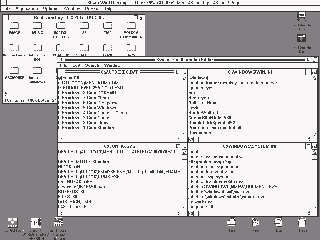
Macintosh Classic
This shot shows off a Classic Macintosh look. Everything is rather flat
and at its default color settings some dialogs look terrible.
Home page is at
Silver Wolf
Desktop.
Zip file via
WinSite
or
silverwolf.com.
I'm sure there's another Mac-style menu setup out there but I haven't
looked
too hard.
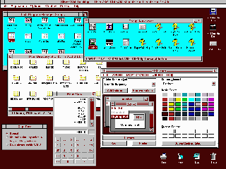
Macintosh with 3-D Buttons
Classic Mac-style but with 3-D buttons and the Mac 3D Burgundy color
scheme.
Silver Wolf Desktop is the shell again showing the
Makeover
program group. OSFrame is running here along with PaperCalc.
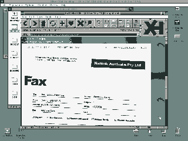
Macintosh System 7
Macintosh with System 7 look.
Silver Wolf Desktop again.
The screen shot on-screen is of the
Arachne DOS GUI web browser.
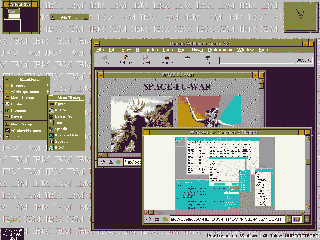
Motif
OSF Motif look. The Motif look is best known on UNIX systems running
the X Window System and usually mwm (Motif Window Manager). Users of
Geoworks' PC/Geos (Ensemble) environment also know this style.
The shell used here is
New Menus for Windows v1.46. Provides an
uncluttered environment, virtual desktops, and even the X SloppyFocus
(moving mouse cursor over open windows give that window focus so you
don't have to bring a window to the top to work on it).
The featured application here is the
Opera web browser.
Note: NMfW is now freeware and the registration number to use it is
available from the program's
download
page.
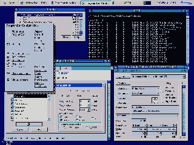
Icewm and Program Bar
With this look I was trying to emulate icewm (another X window manager)
and one of its themes called bluePlastic. This meant trying to create
buttons that looked like little plastic bubbles. Active windows would
have
a lighter blue title bar which isn't seen here.
Icewm includes a taskbar so I went looking for one that worked well. A
year
or so ago most of them weren't too great including an older version of
this one.
Shown here is
ProgramBar
2.30 (
HTTP
or
FTP).
It has a good number of options regarding how it functions
and some are changeable on the fly such as hiding or always shown.
When the taskbar is down maximized apps will adjust themselves
accordingly so
their title bars aren't obscured. However some apps will open up
underneath the
bar which isn't a problem. Just left click on the taskbar and choose
Hide and
it will do so, allowing you to pull the app down.
The options to Always Hide or Show Flyby Hints can be toggled easily
with a
single click on the bar. No need to bring up the Configure window.
Speaking of... the Configuration Help file is very good as it uses
graphic
representations of the Configure options with pop-up hints throughout.
An example
is shown here.
One nice feature of ProgramBar is the ability to have the taskbar
pop-up either
at the top or the bottom by setting trigger points (also left and right
of
the desktop). So when taskbar is hidden and you place the mouse cursor
at the top
of the screen the taskbar will show up there or when placed at the
bottom it'll
pop-up there. Nice feature as it reduces the amount of mouse travel.
Of course a maximized app will adjust itself accordingly.
Another feature is virtual desktops. The desktops can be switched by
clicking
on the squares shown near the clock display (three shown but many more
can be
defined) or via hotkeys. ProgramBar also has a Live Desktop feature
similar to
the Window 95 desktop (and of course
Calmira) where links or
shortcuts
can be placed on the desktop. A pop-up menu is provided for desktop
options.
This feature, however, has a drawback. When Live Desktop is enabled the
desktop
belongs to ProgramBar so pop-up shells such as
Plug-In and
New Menu For Windows will not work. Disabling Live Desktop will
restore
use of those programs but you also lose the ability to use
shortcuts/links
on the desktop. This may not affect a program like
Hajime
(another pop-up/drop-down menu program) as it always keeps a floating
icon on
the desktop to access its menus.
The application on screen is Comic Collector (now discontinued) by
AbleSoft.
It was available for DOS (v1.0 and 2.0), Windows 3.x (v2.0), and
Windows 95 (v3.0).
It's no longer availabe and neither are the price updates. What's a
comic collector
to do? :-/
In the 4DOS window is a directory display of icewm's themes directories
on my
Linux partition. "Huh?" you ask, "...how's that possible?" There's a
utility
set out there called
EXT2 TOOLS or similar that allows for
navigating
Linux partitions from DOS as well as copying files from Linux to DOS
(but not
the other way around). A very useful set of programs.
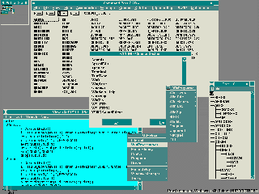
twm - Tab Window Manager
This spartan look belongs to twm, the default window manager for the
X Window System (or at least XFree86). Due to the lack of 3D anything
(borders, buttons, title bars, etc.) I've noticed a speed increase
when running Windows. Especially noticeable with AOL 4.0. The number
of gpfs relating to WAOL and the video driver have decreased. :-)
Couldn't figure out a color for the window/client areas that goes with
green titles/menus.
The shell covered here is Wilson WindowWare's
Command Post.
This is one of the first shareware programs I ever registered. At the
time
I had to have it as I couldn't stand to point and click with Program
Manager.
Wilson WindowWare no longer makes the program since they put more
energy
into their File Manager enhancement program known as
File Commander.
There are no icons to be found since this program is designed for the
keyboard user. It has fully-customizable menus. In fact the whole
underlying
menu structure is since Command Post uses a powerful menu language
called
Command Post Menu Language (CPML). It is, for the most part, the same
language
that makes up their other product, the famous (once famous?)
WinBatch.
This means you can create any kind of menu structure with whatever keys
you want. Your own user prompts, listboxes, pop-up comments,
Yes/No/Cancel
dialogs, etc. An example of the language is shown in the file viewer.
One example of what the language can do: Choose edit INI files from
the main menu and a pop-up list of all INI files appears. Click on
WIN.INI
and now a list of [section names] appear. Then click on whatever
section
you need to modify where you'll be shown a list of keyname=value
entries
ready to be changed.
DOS Heads who love to do things their way with custom batch files and
whatnot would feel at home with either Command Post or WinBatch.
New Menus for Windows is also shown again, this time with
graphics and
icons turned off and the color changed to match the scheme. As with
Windows in general it works faster this way.
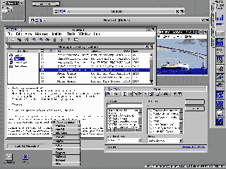
NeXT
The NeXTSTEP(?) look. NeXT is know for the dock bar. Tried a few
different
bars but never really liked them.
RipBar is used here which is pretty
nice. [Note: link broken. Can't seem to find ripbar62.zip anywhere]
I'm not really sure but the home page of a RipBAR program which looks
the same
is
here but the archive names
differ
from the previous link so here's a link to a
RipBAR Pro v1.4 (the
last version for Windows 3.1x).
New Menus for Windows is used again showing part of it torn off
at the top of the screen.
X-it is used for the rolled up
windows.
Instant File Access
(a file open dialog replacement) is shown with
4DOS file descriptions in use. IFA is now freeware and the previous
link
provides registration number and info. IFA can be downloaded from
here.
Main applications are
FoxMail and
ACDSee.
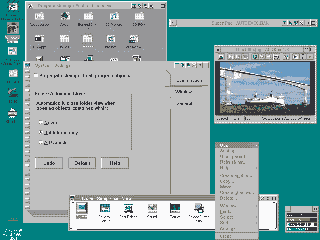
OS/2
Here we have an OS/2 look using the
OS/2 Work Place Shell for Windows.
Very nice Program Manager replacement. If you want that OS/2 look and
feel
then WPS is a must.
Go
here for
additional
information.
On the right side of some title bars are additional buttons provided by
X-it.
X-it allows for rolling up windows to get them out of the way instead
of
minimizing. The SuperPad text editor is rolled up here. X-it's other
buttons
provide an 'X' button to close apps and another button to bring up a
taskmanager.
A new button added in version 1.1 brings up a task list of running apps
so you'll always have access to running apps when running full-screen.
Just a basic shot showing ACDSee and WPS' icon views and setup utility.
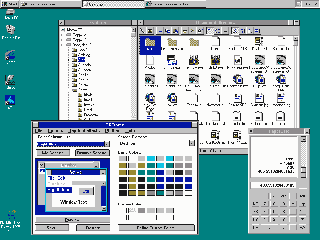
Windows 95
A Windows 95 look of sorts. Featured shell here is Calmira II, Online!
Release 3.0
(newer version[s] have since been released).
Calmira brings Win95 look and feel to Win3 complete with taskbar,
startmenu,
and Explorer-like file manager (that uses 4DOS file descriptions).
Even though there is no Win95 'X' button to close windows, Calmira
does have that function. Just click on the minimize/maximize buttons
with the
right mouse button and the application will close.
Calmira is a first-rate Program Manager replacement.
This shot just shows the Explorer and OSFrame software.
The Calmira home page is at
www.calmira.de.
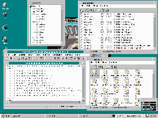
KDE Desktop
This is my attempt at emulating KDE (desktop/window manager available
for the X Window System). The idea of course came from David Burgess'
version of Calmira SR.
Here he gave it that KDE look that I just
couldn't duplicate well with Makeover. Trying to get a flat but 3D look
with Windows just didn't happen. You can see the difference by
comparing
the Explorer windows with TextPad's. Still working on it.
Now all I need to do is fire up Linux & KDE to get the right color
scheme.
David Burgess' version of Calmira SR can be found at this site.
http://www.d.burgess.clara.net/
[No longer the case. His sight will be closing down soon]
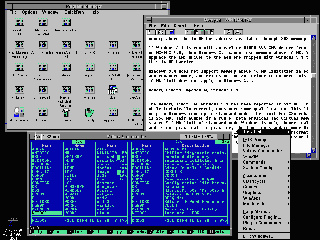
X/Motif with Plug-In
This is another X Window/Motif look. The featured shell
here is
Plug-In
(
alternate
link),
a must-have addition to Windows if you want to be more
productive. Here you see it adds life to Program Manager by changing
those
dull icons to something more pleasing. If you hate having to open and
close
groups then this is the utility for you. Just right click on any group
icon
and the contents of that group pops up in a list so you can view and
run
programs without all that double clicking. It also supports nested
groups.
There are other enhancements to progman such as more detailed
new/properties
dialogs and the ability to change icons without going through the extra
steps
in the new/properties dialog.
You also see three additions to the title bars of programs here. On the
left
side is the current time and on the right is an alternating display of
free
drive space and system memory/resources. These are not static and can
be
changed on the fly by clicking on them. In the far left is a small
button
for Plug-In's Quick Menu which is always available. This Quick Menu
also pops
up if you right click on the desktop as shown in the lower right. This
Quick Menu also has a task list so no matter what you can easily switch
to
hidden or iconized programs without bringing up a taskmanager.
The title bar displays can be excluded for individual programs for
those
that don't like it such as Lotus 1-2-3.
Another utility used here is
SuperBar 2.0h
which you can see by looking at Notepad.
This adds toolbar icons to applications that don't have them. The icons
can be
of various sizes with icons, icons and text, or plain text. The icons
can
be placed along the top, bottom, or either side. The other feature of
SuperBar is to have a program start at the last position and size it
previously
ran. Plug-In also has this feature but with more control. A program's
location, size, or both can be "grabbed" while it's running or you can
paint a size and location on the desktop.
More info is available
here
and the latest
version
(2.0o?).
The other item shown here for the fun of it is
Volkov Commander
a Norton Commander DOS file manager clone. This version is an alpha of
the up and coming version 5 which supports 4DOS descriptions (shown
here), OS/2 longnames,
and Windows 95 long filenames.
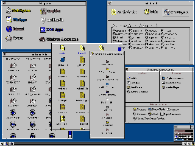
Wayfarer Program Manager
This is
Wayfarer 2.2, the most
customizable program manager ever made as
far as I know. It's completely up to you how you want it to look. Small
or large icons, fancy fonts, custom panels, etc. Everything is
panel-based. Start off with a blank panel/window and go to town.
There are three panel styles: General, progman-style for icons/groups,
Tabs, and Browser (file manager). They can be separate or combined as
shown
in the example.
First we have a general (Programs) panel I use as the starting point
using silly icons
and embossed fonts. The Multimedia window is a good example of combined
panel types. A single panel was split into two (panels can be split
top/bottom
and left/right), the top for launching programs, the bottom for files.
The bottom panel uses tabs which in turn use browser panels for listing
files. The Accessories window shows a three-way split where mini-icons
called
gadgets are used. Each section has its own title, also.
The Browser panels can be designed any way you want and I have two
examples
shown here along with a samples window showing all ten Browser examples
listed.
I must add though that the Browsers aren't all that useful. You can
start programs from them but can't do any file management it seems
(copy, rename, move, etc.).
Wayfarer is a single-click environment. There is no double clicking
whatsoever
which is good but takes getting used to. If you need to act on an icon
such
as modify, delete, etc. just right click on it.
To reduce screen clutter panels will disappear once a program is run
from it.
So when you click on a panel and it comes up, then click on an
application
from it the original panel closes. Panels can be pinned to the desktop,
however,
by right clicking at the upper left on the titlebar. As part of the
customizable nature of Wayfarer you can even turn off captions
(titlebars)
as shown in one of the Browser panels.
Wayfarer provides a taskbar at the bottom. It has nowhere near the
functionality
of other Win95-style taskbars and can be turned off if so desired.
The three buttons on the far right will minimize, maximize, or tile all
running apps.
The far left button is the main button. Right clicking will bring up a
menu to
access Options..., Run..., help, and save settings. Left clicking will
bring up
the main/default panel with help, examples, etc. One can do whatever
they want
with it and customize it just like everything else.
P.S. Wayfarer has a Wikipedia entry though the links point back here.
Wayfarer
2.2 on Wikipedia
Contact Marc D. Williams at
marcdw
Page created with XEdit/QEdit (DOS), Jed (DOS/Linux),
and TextPad (Windows 3.x) text editors
depending on where I am at the moment. (^_^)
Layout tested with the following browsers/HTML viewers:
- Viewhtml 2.5 (DOS)
- IntraDOS 1.4 (DOS)
- Bobcat/Lynx 2-4-2 (DOS)
- Lynx 2.8.1dev.23 (DOS)
- Arachne 1.40 (DOS)
- Minuet 1.0_Beta_18A (DOS)
- Net-Tamer 1.11 386 (DOS)
- Opera 3.21 (Windows For Workgroups 3.11)
- AOL 3.0 and 4.0 Browser (Windows For Workgroups 3.11)
- Lynx 2.8.1dev.25 (Linux)
- Netscape Navigator 4.51 (X11, Linux)
- NCSA Mosaic 2.7b5 & 3.0.11 (X11, Linux)
Original file generated by the program
LISTPICS (DOS)
- Freeware -
Compliments from
The Thinking
Man's Minefield
http://www.theabsolute.net/sware/
![[Guy at PC]](./images/pc.jpg)
{kind=link}
{kind=link}
{kind=link}
{kind=link}
{kind=link}
{kind=link}
{kind=link}
{kind=link}
{kind=link}
{kind=link}
{kind=link}
{kind=link}